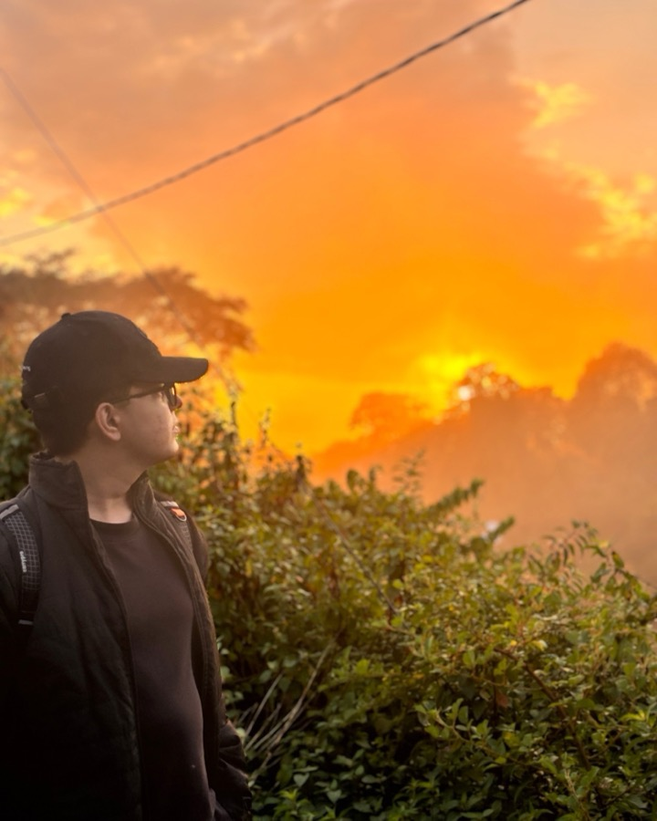

Pratim Narayan Moitra
Pratim Narayan Moitra is a tourism social media marketer based in India. He runs social media, email and paid campaigns for tourism associations, DMCs, hotels and tourism boards. He has worked with PATA, ATTA, the World Food Travel Association and GBTA, and holds a Masters in Tourism Management from Amity University.

Quick facts
I take a small number of tourism clients at a time, so yours gets my full attention.
- Name
- Pratim Narayan Moitra, also written Pratim Narayan and Pratim N. Moitra
- Role
- Tourism social media marketer. Digital Systems and Marketing Consultant at the World Food Travel Association
- Based in
- India
- Works with
- Tourism associations and trade bodies, DMCs and tour operators, boutique hotels and resorts, tourism boards and travel academies
- Has worked with
- PATA, ATTA, GBTA, the World Food Travel Association and Adventure.travel
- Education
- Masters in Tourism Management, Amity University. BBA in Marketing
- Selected for
- PATA internship as the only candidate from north India. First Indian intern at ATTA, extended from 3 to 11 months
- Certifications
- ATTA and HubSpot Academy
- Contact
- pratimxnarayan@gmail.com
- linkedin.com/in/pratimnarayan
Thirty seconds
A real post, fixed on screen, in one short film.
If you'd rather watch than read, this is one What If episode done live, the numbers behind me and the offer, in half a minute.
Where I've worked, and what it taught me.
- PATAThe only candidate selected from north India
- ATTAFirst Indian intern, kept on from 3 to 11 months
- WFTAConsultant to the World Food Travel Association
- MastersIn Tourism Management
The Pacific Asia Travel Association picked me as the only intern from north India, and its CEO personally endorsed my work. At the Adventure Travel Trade Association I was the first intern from India, and a 3 month role became 11 months. Today I work with the World Food Travel Association as its Digital Systems and Marketing Consultant, and I run social media end to end for tourism brands in India, Bhutan, the Philippines and the US.
Since then I've worked with many more tourism brands, on everything from a twelve week content calendar to the whole channel, videos included.

Owning the process and results, Pratim creatively and collaboratively led the social media marketing which quickly and consistently achieved the results we were looking for.

Pratim played a key role in implementing our social media strategy and supported content creation efforts with creativity, dedication, and attention to detail.
How I work
You see the work before you pay.
Every project starts with a free week of posts or a free written audit. If the work isn't right for you, you keep it and we part as friends.
One person, start to finish.
I plan the calendar, design the posts, write the captions and walk you through the numbers myself. Nothing is handed to someone you haven't met.
Your hours, not mine.
For US clients, posts and replies are ready before your morning. For European clients, our afternoons overlap, and that's when we talk. I reply within one working day.
Proof every month.
One page with three numbers that moved, what drove them and what changes next month. Your board can read it in two minutes.
End to end, videos included.
I work out what goes where and when, make the carousels and the Reels, post them, answer the comments and report the numbers. The whole channel comes off your desk.
You see the value, or month four is free.
We agree two targets from your own numbers in week one. If we miss them at day 90, the next month costs nothing.
Two ways to start.
Get 5 free posts in 7 days
You keep them either way.
Get 5 free postsGet a free written audit in 3 working days
No call needed.
Get a free auditLast updated